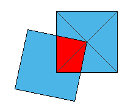

Two Squares
We have two squares of paper whose side is 10cm. Now, we put the corner of one on the center of the other like the right figure. Find the maximum of the area overlaped each other.

Applet
Drag red point